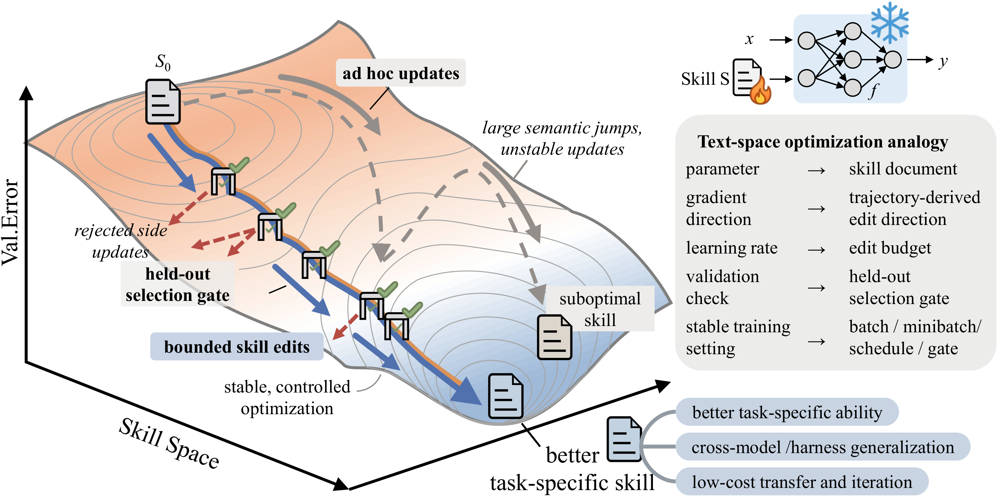
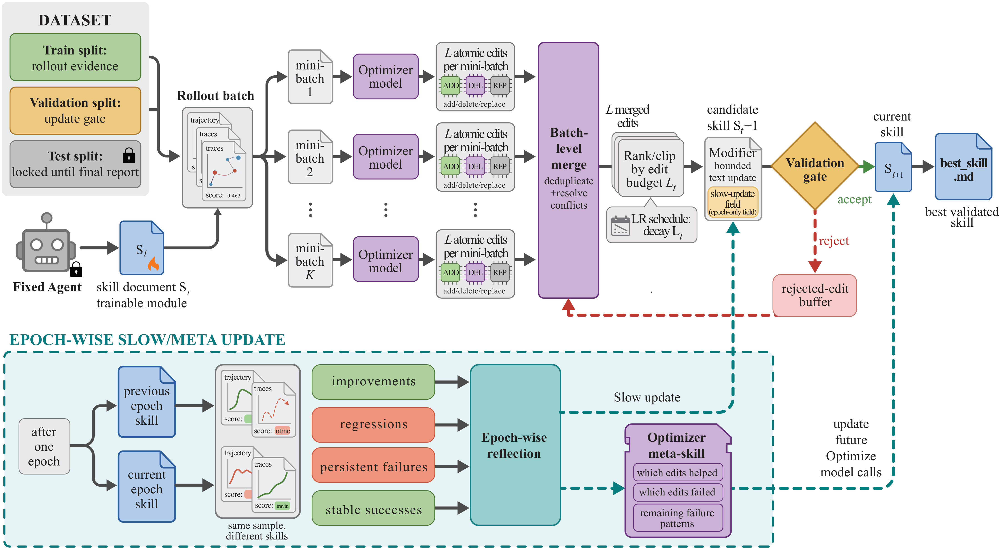
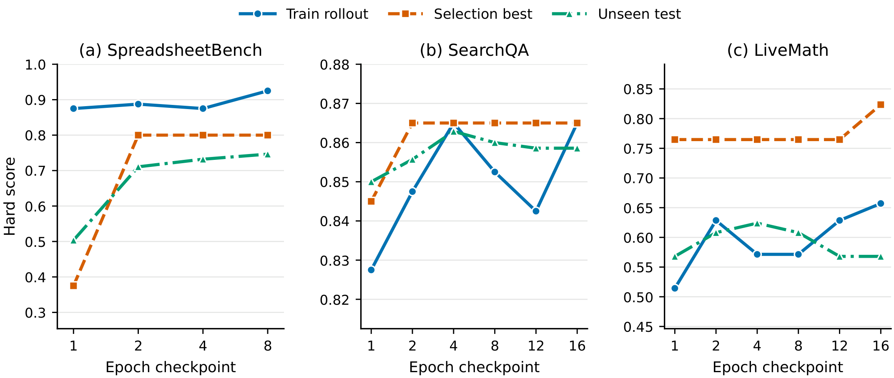

SkillOpt：把 agent skill 当成「可训练的外部状态」来优化
SkillOpt: Executive Strategy for Self-Evolving Agent Skills
skill.md 文档当成「frozen 模型的可训练外部状态」，用一个独立的 optimizer model 把打过分的 rollout 转成有预算上限的 add / delete / replace 编辑，并且只有当一次编辑在 held-out validation split 上严格变好时才接受。它把 deep-learning optimizer 的那套纪律（learning rate budget、rejected-edit buffer、epoch-wise slow/meta update、validation gate）原封不动搬到 text-space，从而让 skill 的进化第一次变得「可控、可审计、可复现」。在 6 个 benchmark × 7 个 target model × 3 个 execution harness 共 52 个 cell 上全部取得 best-or-tied，GPT–5.5 direct chat 平均 +23.5 分，且部署时对 target model 零额外推理调用、不改一个权重。
①开源贡献 Open-source Artifacts
本文的代码已在 Microsoft 官方 GitHub 仓库 microsoft/SkillOpt（论文首页给出短链 aka.ms/SkillOpt，301 重定向到项目主页 microsoft.github.io/SkillOpt/）以 MIT license 公开，含完整训练循环、eval-only 模式、各 benchmark 的 dataloader 与 WebUI dashboard。本方法本身就不涉及任何模型权重更新，因此「不放出权重」是设计使然而非缺失；它优化的产物是一个轻量的 best_skill.md 文本文件。数据集均直接复用现有公开 benchmark，仓库不重新分发，需使用者自行准备。下表为已逐项核实的结果（核实日 2026-05-30）。
| 类型 | 是否开源 | 内容 / 链接 |
|---|---|---|
| 代码 Code | ✔ | github.com/microsoft/SkillOpt · MIT · 含 scripts/train.py（训练循环）、scripts/eval_only.py（仅评测）、各 benchmark dataloader 与评测 metric、WebUI dashboard；optimizer 的 8 个 prompt contract 内嵌于流水线（见附录 C.2，本解读 §③ 完整复述）。 |
| 模型权重 Weights | ✘（设计上无需） | 方法对 target model 与 optimizer model 都是 frozen / API 调用，不训练、不发布任何权重。target/optimizer 用的是 GPT–5.x、Qwen3.5/3.6 等现成模型。 |
| 数据集 Dataset | ✘（复用公开 benchmark） | 不重新分发数据；用 split_seed=42 在公开 benchmark 上确定性地切 train/selection/test。 |
| 环境 / Benchmark | ✔（均为已有公开 benchmark） | SearchQA、SpreadsheetBench、OfficeQA(Pro)、DocVQA、LiveMathematicianBench、ALFWorld；harness 复用 Codex CLI、Claude CLI；transfer 实验另用 OlympiadBench、Omni-MATH。 |
| 项目主页 / Demo | ✔ | microsoft.github.io/SkillOpt/ · 含论文链接、各 benchmark 的 skill 演化示例与 YouTube 概览视频；另有姊妹项目 SkillLens。 |
②研究动机与贡献 Motivation & Contribution
背景与问题
frontier LLM 越来越多地以 agent 的形式部署：从单 prompt 调用，到挂着 tool、file、verifier 的多步 execution harness（ReAct、Toolformer、Voyager、SWE-agent 这条线）。在这种场景里，domain adaptation 已经不只是改权重或改 prompt，更要改 agent 的「程序（procedure）」——它如何搜证据、如何调 tool、如何遵守领域约定、如何格式化输出。agent skill（近期 SkillsBench、SoK on agentic skills 提出的概念）正好是承载这套程序的天然载体：一份可移植的自然语言文档，打包了 procedure、domain heuristics、tool policy、output constraint 与 failure mode，让一个 frozen agent 仅靠「外部文本」就能适应新领域。
作者点破一个被忽视的基本问题：如果 skill 就是真正的 adaptation layer，那它本身就应该「被训练」，可现有做法没一个真把它当成可优化对象来对待。具体的失败模式有三类：
- 人手写 / 一次性生成（hand-crafted / one-shot LLM skill）：质量取决于先验是否恰好对上 benchmark，且写完就不动——观察到 rollout 失败后无法自我纠正，在陌生 domain 或 harness 下很脆。
- 松散自我修订式进化（Trace2Skill、EvoSkill、SkillForge 等）：能把执行经验蒸成文本 artifact、做 failure analysis、长出 skill library，但缺少「held-out 验证门」，一次看似合理的改写可能反而拖垮 target model；改动幅度也不受控，容易整段重写、抹掉有用规则、过拟合到单次失败。
- prompt 自动优化（TextGrad、GEPA、DSPy 这条线）：把语言 artifact 当可优化对象、直接吃执行反馈，但它们针对的是 prompt / system 设计 / 整套 configuration，不是一份可训练、可验证、可导出、可复用的持久 skill 文档。
更根本的痛点是：weight 级的 adaptation 对闭源 frontier 模型常常根本不可用，对开源模型也昂贵。于是「在 text-space 里像训权重一样训练 skill」就成了一条务实且通用的路径——前提是要把权重优化里那套让结果可复现的纪律搬过来。
本文的切入点
核心 idea 一句话：把 skill editing 当成一个「可控的 domain-adaptation 训练过程」——skill 文档是被优化的 external state，另一个 frontier 模型充当 optimizer，并对「用什么证据、步长多大、怎么验证、往哪个方向改」施加 training-style 的控制。作者把这套类比讲得很干脆（见 Figure 1 右上的对照表）：
关键洞察是：「有界 + 验证门控」的更新是这套类比能成立的命门。如果连续几次 skill 修订改得太猛、方向不一致，那么 rejected edits 和此前 accepted edits 就不再构成有意义的优化历史；只有让每次修订都贴着上一版小步走，后续的 optimizer 调用才学得到「什么有用、什么失败、什么该保留」。这正是 deep-learning optimizer 之所以可复现的纪律，作者把它原样移植到文本上。
核心贡献
- 提出问题范式 + 方法：首次把 agent-skill learning 形式化为「在一个自然语言外部状态上的优化」，并提出 SkillOpt——一个 harness-agnostic 的 text-space optimizer，配齐了 rollout batch、reflection minibatch、add/delete/replace 编辑、textual learning rate 与 schedule、held-out 接受门、rejected-edit buffer、epoch-wise slow/meta update 这一整套训练机件。
- 大规模实证：在 6 个 benchmark × 7 个 target model（从 frontier 级 GPT–5.5 到小模型 Qwen3.5–4B）× 3 个 execution harness（direct chat、Codex、Claude Code）共 52 个 cell 上全部 best-or-tied，且逐 cell 都打赢了 no-skill / human-skill / one-shot LLM-skill / Trace2Skill / TextGrad / GEPA / EvoSkill。GPT–5.5 平均 +23.5（direct chat）/ +24.8（Codex）/ +19.1（Claude Code）。
- 验证设计 + 三类迁移：通过 component ablation 验证每个机件的作用，并展示 cross-model / cross-harness / cross-benchmark 三种迁移都为正——说明导出的 skill artifact compact、可复用、无需改权重即可部署，把「优化一次、到处复用」的应用价值坐实。
③方法 Method
整体框架（Figure 1 的几何直觉 + Figure 2 的工程流水线）：一个 frozen 的 target model $M$ 拿着当前 skill 去执行任务，产出打分的 rollout；一个独立的 optimizer model $O$ 读这些 rollout、反思成功与失败、提出有预算上限的 add/delete/replace 编辑；编辑被层级化地合并、排序、按 edit budget 截断成一个 candidate skill；这个 candidate 必须先过 held-out selection gate，只有严格变好才被接受成新的 current skill（更好则同时刷新 best_skill.md），否则被拒、并把「试过哪些编辑、掉了多少分」写进 rejected-edit buffer 作为负反馈。跨 epoch 还有一个 slow/meta update 捕捉更长视野的规律。部署时只导出那一份 best_skill.md（约 300–2,000 token），target model 与 harness 保持不变，没有任何额外推理时模型调用。

0｜问题设定（Problem Setup）
skill $s$ 是一段插入 agent context 的自然语言 policy（direct-chat 里 prepend 到 system/developer 指令，tool-use harness 里作为持久 procedural memory）。对 harness $h$、任务 $x$、skill $s$，执行得到 trajectory $\tau$ 与一个标量分数 $r$：
$$(\tau(s),\,r(s)) = h(M,\,x,\,s),\qquad r(s)\in[0,1].$$把数据切成 train / selection / test 三份 $D_{\mathrm{tr}},D_{\mathrm{sel}},D_{\mathrm{test}}$：$D_{\mathrm{tr}}$ 供经验、$D_{\mathrm{sel}}$ 把关更新、$D_{\mathrm{test}}$ 只在最终报数时用一次。SkillOpt 用 $D_{\mathrm{tr}}$ 生成一组 candidate skill $\mathcal{C}(D_{\mathrm{tr}})$，在 $D_{\mathrm{sel}}$ 上选最好的那个，再在 $D_{\mathrm{test}}$ 上报告：
$$s^\star_{\mathrm{sel}} = \arg\max_{s\in\mathcal{C}(D_{\mathrm{tr}})}\ \frac{1}{|D_{\mathrm{sel}}|}\sum_{x\in D_{\mathrm{sel}}} r(s),\qquad \mathrm{Test}(s^\star_{\mathrm{sel}}) = \frac{1}{|D_{\mathrm{test}}|}\sum_{x\in D_{\mathrm{test}}} r(s^\star_{\mathrm{sel}}).$$由于 selection 和 test 是不相交的 split，报告的数字衡量的是泛化而非 validation-set fit。optimizer 的状态包含：current skill、best validation-gated skill、cached skill hash（避免重复评估）、epoch-local 的 rejected-step buffer、以及可选的 slow/meta-update 状态。最终只把 best accepted skill 导出为 best_skill.md。

1｜Forward Pass：Rollout Evidence（前向 = 收集证据）
每个优化 step，target model 用 current skill 从 $D_{\mathrm{tr}}$ 跑一个 rollout batch，记录任务 metadata、消息、tool call、observation、命令输出、最终答案、verifier 反馈，以及 benchmark 特有的上下文（spreadsheet 预览、文档引用、压缩的执行 trace）。这个 batch 就是「证据单元」：小 batch 更新快但噪声大，大 batch 在 skill 改动前能暴露更多复现型规律。实现还支持 accumulation（先在几个 rollout batch 上反思再合并成一次更新），把执行吞吐与更新频率解耦——这对应 Algorithm 1 里的 accumulation factor $A$。
2｜Backward Pass：Minibatch Reflection（反向 = 把轨迹变成编辑）
optimizer model 把 trajectory 转成 skill 编辑（沿 Reflexion / Self-Refine / 反思式 prompt evolution 这条线）。关键做法是：先把 failure 与 success 分开，各自再切成 reflection minibatch。理由是单条 trajectory 往往只暴露偶发修复，而 minibatch 能暴露反复出现的 procedural error（agent 老在错的地方搜、老用错格式写答案、老不去 verify tool 结果）。failure minibatch 提「缺失/纠正型规则」，success minibatch 提「保留已奏效行为」。每次反思返回结构化的 add/delete/replace 编辑（patch 模式），或在 rewrite 模式下返回少量改写建议。
局部提案层级化合并：先各自合并 failure-driven 与 success-driven 编辑，再以「failure 纠正优先」合二为一；这一步过滤掉重复、互相矛盾、过于 example-specific 的建议。
3｜Bounded Text Updates：edit budget = textual learning rate（有界更新）
SkillOpt 里的「学习率」就是 edit budget $L_t$：第 $t$ 步最多施加的编辑条数。合并后，optimizer 按「预期收益」对编辑池排序，截断到 top-$L_t$ 条。这正是它与 ad hoc prompt rewriting 的本质区别——
constant / linear / cosine / autonomous 四种 schedule；默认 cosine：早期步长大、后期衰减到更小的巩固性小改（默认 $L_t=4$，floor $L_t=2$）。
编辑有两种作用模式：patch 模式是局部操作 append / insert_after / replace / delete；rewrite 模式是用选中的建议条件出一次整段改写。step 级编辑不能覆写受保护的 slow-update 区域（见下文），从而把「快的局部改动」与「慢的 epoch 级巩固」隔离开。
4｜Validation Gate + Rejected-Edit Buffer（验证门 + 拒绝缓冲）
每个 candidate skill 用同一个 frozen target model 与同一 harness 在 $D_{\mathrm{sel}}$ 上评估：
- 若分数严格高于当前 selection 分 → 成为新的 current skill；若还超过历史最好分 → 同时刷新
best_skill.md； - 否则拒绝（注意：平手也拒绝，gate 是 strictly greater than，所以部署的 skill 永不会悄悄漂移）。
这个门把「反思」从无条件自我编辑变成了 propose-and-test 优化——很关键，因为「听起来合理」的文本改动照样可能拖垮 target model。被拒的更新也不浪费：optimizer 维护一个 epoch-local buffer，记录观察到的 failure pattern，以及被拒 step 里「试过哪些编辑、造成多少掉分」。同一 epoch 内后续的反思调用会读到这个 buffer，从而避免重复失败的编辑、聚焦未解决的失败。这相当于给训练循环加了负反馈，而不增加任何推理时成本（buffer 只在训练时存在）。
5｜Epoch-Wise Slow/Meta Update（慢更新 + 元技能 ≈ momentum）
快更新只看当前 batch；slow update 看相邻 epoch。一个 epoch 末，SkillOpt 在「同一批训练样本」上分别用上一 epoch 与本 epoch 的 skill 重跑，把结果归成 improvements / regressions / persistent failures / stable successes 四类，然后让 optimizer 写一段简洁的纵向指导，注入 skill 文档里一个受保护的 slow-update 区域（由 <!-- SLOW_UPDATE_START --> / <!-- SLOW_UPDATE_END --> 标记围住，step 级编辑碰不得）；这段注入同样要过 validation gate。作者把它类比成 momentum：跨 epoch 携带稳定的编辑方向、捕捉持久的 domain lesson。
此外还有一个 meta skill（optimizer memory），只在 optimizer 一侧：它总结「哪些编辑模式有用、哪些被拒、哪些失败跨 epoch 持续」，prepend 到未来 optimizer 的反思/合并/排序 prompt 里，但绝不随 target skill 一起发布。好处是 separation of concerns——部署的 skill 保持紧凑可移植，而训练受益于一份更丰富的「编辑过程档案」。
6｜Harness-Agnostic Deployment（与 harness 解耦）
SkillOpt 通过一个轻量 adapter 接口 与 harness 解耦：adapter 负责构造 train/eval batch、把当前 skill 注入 agent context、跑原生 harness、回传打分 trajectory。于是同一个 optimizer 既能服务 direct QA，也能服务 spreadsheet 执行、文档推理、multimodal QA、embodied 环境，以及 Codex / Claude Code 式的执行循环。三种 harness 都消费同一种 best_skill.md 格式——这正是 cross-harness transfer 能成立的工程前提。其中 Codex harness 会把当前 skill 渲染成每任务的 SKILL.md，并回读一段压缩执行 trace（codex_trace_summary.txt）喂给反思，让 optimizer 学到 agent「实际做了什么」而不只是最终答案。
- 4 个 epoch；rollout batch size 40/step；reflection minibatch size 8（16 个 analyst worker 并行反思，merge batch size 8）。
- textual learning rate $L_t=4$，cosine 衰减，floor $L_t=2$。
- held-out gating 严格大于当前 selection 分（平手即拒）。
- slow update 每 epoch 采 20 个任务做纵向对比；optimizer-side meta skill 开启（teacher-only，不发布）。
- 默认
patch编辑模式（备选rewrite_from_suggestions）；可选 rejected-edit buffer 开启。 - teacher 反思每 minibatch 最多 3 轮 refinement；student 与 teacher 调用默认
mediumreasoning effort。 - 训练池很小的 benchmark 会等比缩 batch 但保持同样的 gate/scheduler/slow-update 机件：LiveMath 每 epoch 35 个训练任务、rollout batch 200；ALFWorld 39 训练任务、140 selection、134 test。
- 所有 split 由固定
split_seed=42确定性切分，默认比例约 train:selection:test = 2:1:7（部分用 4:1:5）。 - 每步落盘
edit_apply_report.json记录逐条编辑的 accept/skip 状态——事后可完整溯源best_skill.md的每一处改动。
analyst_error.md（失败分析，要求只补共性缺口、不 hardcode 任务专属值）、analyst_success.md（成功分析，只对 skill 尚未覆盖的模式提案、优先强化已有 section）、merge_failure.md / merge_success.md（各自层级合并、去重、给每条编辑估 support_count）、merge_final.md（最终合并，failure 优先于 success）、ranking.md（按 systematic impact > complementarity > generality > actionability 排序选 top-$L_t$）、slow_update.md（写覆写式纵向指导进受保护区）、meta_skill.md（写 optimizer-side 元指导）。编辑 JSON 形如 {"op":"append|insert_after|replace|delete", "target":..., "content":..., "support_count":..., "source_type":"failure|success"}；所有 prompt 都被显式禁止改动 SLOW_UPDATE 受保护区。
④实验评估 Evaluation
评测设置
- Benchmark / 数据集（6 个，覆盖 QA / 表格 / 文档 / 数学 / embodied）：
SearchQA（抽取式问答，单轮）、SpreadsheetBench（表格代码 + tool 使用，真实 openpyxl/pandas runtime，默认
mode=multi，最多 24 次 tool call）、OfficeQA(Pro)（端到端 grounded 推理，多轮 codegen，最多 30 轮）、DocVQA（multimodal 文档推理）、LiveMathematicianBench (LiveMath)（数学多选 MCQ）、ALFWorld（持久 embodied 决策，每 episode 最多 50 步）。迁移实验另用 OlympiadBench → Omni-MATH。 - Target model（7 个，跨尺度）：GPT–5.5、GPT–5.4、GPT–5.4-mini、GPT–5.4-nano、GPT–5.2、Qwen3.5–4B、Qwen3.6–35B-A3B。
- Execution harness（3 个）：direct chat（单次 chat completion，skill 进 system prompt）、Codex（codex CLI，workspace-write sandbox，回读执行 trace）、Claude Code（claude CLI，同样的 workspace 合约）。ALFWorld 因需持久 embodied 交互，不在 Codex/Claude Code 下评测。
- 对比基线（7 个）：no skill（frozen + benchmark 默认 prompt）、human skill（专家手写）、one-shot LLM skill（GPT–5.5 一次性生成、不再更新）、Trace2Skill（trajectory 级 skill 蒸馏）、TextGrad（梯度式自然语言 prompt 优化）、GEPA（Pareto 反思式 prompt evolution）、EvoSkill（harness 侧、靠 failure analysis 演化 skill-folder）。所有基线共享同一 target model、同一 held-out test split、同一 scorer，隔离掉「prompt 模板/打分流水线」等次要因素，只比较 adaptation procedure 本身。
- Metric：各 benchmark 的原生 hard score 或 exact-match accuracy（百分比，越高越好），全部在不相交的 held-out test split 上算。
主要结果（Table 1 节选，GPT–5.5）
下表摘 GPT–5.5 在三种 harness 下的核心数字（绿色 = 相对 no-skill 的增量）。完整 Table 1 覆盖全部 7 个 model，结论是 SkillOpt 在全部 52 个 (model, benchmark, harness) cell 上都是 best-or-tied，且相对 no-skill 全为正增益。
| harness / 方法（GPT–5.5） | SearchQA | Spreadsheet | OfficeQA | DocVQA | LiveMath | ALFWorld |
|---|---|---|---|---|---|---|
| direct chat · No skill | 77.7 | 41.8 | 33.1 | 78.8 | 37.6 | 83.6 |
| direct chat · 最强 per-cell 基线 | 84.8 | 73.6 | 66.9 | 90.1 | 49.2 | 93.3 |
| direct chat · SkillOpt | 87.3 | 80.7 | 72.1 | 91.2 | 66.9 | 95.5 |
| （增量 vs no-skill） | +9.6 | +38.9 | +39.0 | +12.4 | +29.3 | +11.9 |
| Codex · No skill | 81.8 | 27.5 | 38.3 | 87.2 | 35.2 | — |
| Codex · SkillOpt | 87.3 | 85.0 | 51.1 | 92.2 | 78.4 | — |
| Claude Code · No skill | 81.9 | 22.1 | 57.6 | 86.6 | 40.8 | — |
| Claude Code · SkillOpt | 85.9 | 80.4 | 71.5 | 90.1 | 56.5 | — |
怎么读这些数字：
- 增益异常大（对一个不动权重的方法而言）。GPT–5.5 direct chat 六 benchmark 均值从 58.8（no skill）升到 82.3（+23.5）；而「逐 cell 挑六个基线里最好那个」的 oracle 也只有 76.9，SkillOpt 还领先这个 oracle 5.4 分。Codex/Claude Code 下平均 +24.8 / +19.1。
- procedural benchmark 提升最猛。SpreadsheetBench 41.8→80.7、OfficeQA 33.1→72.1、LiveMath 37.6→66.9——这些「严格 procedure + 严格答案格式」最能暴露 zero-shot frontier 模型的短板，也最吃 skill；而 SearchQA 这类 no-skill 已接近天花板的，增益最小（+9.6）。
- 对小模型同样有效，相对收益更大。七个 direct-chat target 平均 +17.6 分：GPT–5.4 +12.7、5.4-mini +15.4、5.4-nano +26.7、5.2 +16.6、Qwen3.5–4B +19.2、Qwen3.6–35B-A3B +9.1。GPT–5.4-nano 在 DocVQA 近乎翻倍、ALFWorld（34.3→69.4）约 ×2——印证「compact skill 能补上小模型权重里还没有的 procedural knowledge」。
- 增益不是单纯堆 prompt 长度。human skill 本就有 145–516 token、常比 one-shot LLM skill 还长，却在每个 direct-chat cell 上都被 SkillOpt 打赢，而后者学到的 artifact 反而更紧凑。也不是单纯靠 optimizer 强：连 GPT–5.4-nano 当 target 时 SkillOpt 也领先所有基线。
消融 / 分析（Table 2 / 3 + Figure 3）
消融用 GPT–5.5 同时当 target 与 optimizer。总信息：增益对「rollout batch / reflection minibatch / 学习率具体取值」相当不敏感，但对「bounded text-space learning、validation gating、rejected-edit feedback、epoch-wise slow/meta update」这几个机件高度敏感——正是这些让 skill 编辑「行为上像一个受控训练循环」的设计。
| 组件（Table 3，GPT–5.5） | SearchQA | Spreadsheet | LiveMath |
|---|---|---|---|
| 完整 SkillOpt（lr=4 默认） | 87.1 | 77.5 | 61.3 |
| without lr（无界改写，去掉 learning rate） | 84.6 | 75.7 | 57.3 |
| without rejected buffer | 85.5 | 72.9 | 58.9 |
| without meta skill & slow update | 86.3 | 55.0 | 59.7 |
- 有界 vs 无界（决定性）。去掉 learning rate 让 skill 无预算地整段改写，三 benchmark 全跌（最多 LiveMath −4.0）。作者强调质性结论才是要点：任何「中等强度的有界 edit budget」都已打赢「无预算改写」的基线。扫 $L_t\in\{1,2,4,8,16\}$ 与四种 schedule（constant/cosine/linear）都在窄带内波动——故事不依赖某个特定学习率或调度器，依赖的是「有界」本身。
- rejected buffer 是稳定器。去掉后 SearchQA −1.6、SpreadsheetBench −4.6、LiveMath −2.4，证实它在默认循环里把失败编辑转成有效负反馈。
- slow/meta update 对长视野 procedural benchmark 尤其关键。同时去掉 meta skill 与 slow update，SpreadsheetBench 暴跌 77.5→55.0（−22.5，全消融中最大）——因为这同时抽走了「跨 epoch 的长视野证据流」和「保护区合约（防局部编辑覆写持久 procedure lesson）」。
- 证据量：procedural benchmark 越多证据越好。训练集从 1 example→100% 时 SpreadsheetBench 47.5→78.0、LiveMath 59.1→70.5；而 SearchQA 在 20% 后就饱和在 84–86。reflection minibatch（1→32）与 rollout batch（8→full epoch）两个维度都很平——增益不是脆弱的 prompt-search batch 调出来的。
- validation gate 真的在选「会泛化」的 checkpoint。Figure 3 显示，validation 选出的 epoch checkpoint 与「在 unseen test 上泛化最好」的 checkpoint 高度对齐，而非只拟合 selection split。

迁移、optimizer 强度、与 skill 的「经济性」（Table 4 / 5 / 6 + Figure 4）
三类迁移（Table 4）全为正、无一跌破 target 的 no-skill 基线：
- Cross-model：GPT–5.4 上训的 SpreadsheetBench skill 迁到 5.4-mini(+9.4)/5.4-nano(+3.0)，LiveMath skill 迁到 5.4-mini(+4.5)/5.4-nano(+5.6)；其中 LiveMath→5.4-nano 的迁移分(28.8)甚至超过其 in-domain SkillOpt(27.2)——说明部分学到的 procedure 本就 target-model agnostic。
- Cross-harness（最强的部署信号）：Codex 上训的 SpreadsheetBench skill 迁到 Claude Code +59.7（22.1→81.8，略超 in-domain Claude Code 的 80.4）；反向 Claude Code→Codex +43.6。说明学到的是 workbook 级 procedure（结构优先检查、formula-aware 验证、静态值物化），一次优化的成本能在相关执行环境间摊销。
- Cross-benchmark（最严格）：OlympiadBench→Omni-MATH 在三个尺度上 +3.7 / +1.8 / +1.3，全正——支持「学到的是可复用数学 procedure 而非记住 benchmark 格式」。
optimizer 强度是「训练时杠杆」（Table 5）：因为 optimizer 只在离线训练时跑、部署时绝不调用，所以「用更强的 frontier optimizer（GPT–5.5）」能在不增加任何部署成本的前提下把 deployed skill 做得更好（每个 cell 增益都更大）。而「与 target 同尺度的 optimizer」也远未崩溃——能回收强 optimizer 增益的 56–74%，说明 SkillOpt 不是「强 teacher 蒸到弱 student」的蒸馏管线，优化循环本身贡献了实质价值。
学到的 skill 紧凑、廉价、procedural（Table 6 + Figure 4）：
| benchmark（GPT–5.5/5.5 student/teacher） | 初始 tok | 最终 tok | accepted 编辑数 | 训练 token | 每提升 1 分的 token |
|---|---|---|---|---|---|
| SearchQA | 16 | 857 | 4 | 213.8M | 37.9M |
| SpreadsheetBench | 224 | 1,995 | 4 | 21.4M | 0.6M |
| OfficeQA | 145 | 883 | 1 | 20.8M | 1.1M |
| DocVQA | 81 | 959 | 3 | 188.2M | 46.4M |
| LiveMath | 154 | 379 | 1 | 23.2M | 3.6M |
| ALFWorld | 516 | 1,321 | 2 | 59.3M | 15.9M |
- 极少编辑撬动大增益。最终 skill 全部 ≤2,000 token（中位约 920），accepted 编辑数仅 1–4 条（中位 2.5）：LiveMath 的 +29.3、OfficeQA 的 +39.0 都各只来自一条 accepted 编辑。这是 validation gate 在干实事的直接证据——optimizer 每 epoch 提案远多于此，但只有少数过门、活进部署 skill；大量 text-space 搜索被 rejected buffer 接住、从不送达 target model。
- cost 一次性付清。procedural benchmark 每分仅 0.6–3.6M token；轨迹长/multimodal 的（SearchQA 37.9M、DocVQA 46.4M）贵一个量级。但这是训练时一次性成本，导出后
best_skill.md对 target agent 零额外 optimizer 调用、零权重更新。 - 学到的规则是 procedural 而非 instance-specific（Figure 4 逐 benchmark 各一条原文规则）。例如 SpreadsheetBench 学到「先查 workbook 结构与公式，再把求值后的静态值写进整个目标区间，而不是依赖 Excel 重算」；LiveMath 学到「按 theorem strength 排序选项、偏好有更强论证的更强结论」；ALFWorld 学到「维护 horizon-aware 的 visited/frontier 账本、对同类失败后多样化搜索、别反复折返目标」。这些恰是 frontier 模型 zero-shot 不会自觉遵守的纪律。§4.5 的两个 case study 进一步显示：SkillOpt 不是用无关 prompt 替换初始 skill，而是围绕反复出现的 failure mode 增补紧凑约束——ALFWorld skill 从泛化的「搜-变换-放置」策略演化成带物体身份、搜索记忆、进度锁、loop breaker 的有限状态执行 policy（49.3→74.6）。
⑤洞见 Insights
- 「可控」比「会改」更重要。同样是把执行经验写回文本，真正解锁稳定增益的不是「让模型自我改写 skill」这件事本身，而是把权重优化里那套有界步长 + held-out 验证门 + 拒绝缓冲 + 慢更新的纪律移植过来。消融里一旦抽掉这些机件（尤其无界改写、去掉 slow/meta），增益就显著塌掉——这给所有「self-evolving / self-refine」类工作一个明确警示：没有验证门控的自我编辑，可能正在悄悄变差。
- 把「训练时算力」与「部署时成本」彻底解耦，是一个被低估的设计自由度。optimizer 只在离线训练跑，因此可以肆意用更强的 frontier 模型把 skill 打磨得更好，而 deployed
best_skill.md对 target agent 是零额外调用、零权重更新的纯文本。换句话说，「用强模型训练、用任意模型部署」在 text-space 里天然成立，且产物可审计（每处改动可由edit_apply_report.json溯源）、可在 model/harness/benchmark 间迁移。 - 1–4 条编辑就能撬动 +20~40 分这件事本身很反直觉：它说明 frontier 模型缺的往往不是「能力」，而是几条它 zero-shot 不会自觉遵守的 procedural discipline（答案格式、证据绑定、静态值物化、搜索前沿管理）。validation gate 的作用，是从 optimizer 的海量提案里把这少数几条真正泛化的规则筛出来。
局限与未来
作者自陈的边界（附录 B）：(1) 优化循环依赖「打分的 trajectory + held-out selection split」，因此最适用于有自动 verifier / exact-match / 可执行检查的任务；对成功本身主观、多维或评判昂贵的开放式领域，validation gate 可能需要更强的 human/model-based 评估。(2) 虽然部署 artifact 只是一份 compact best_skill.md，但训练阶段仍需额外的 rollout 计算与 optimizer 调用；这笔成本在「同一 skill 反复复用」时摊薄，对一次性任务则不划算（Table 6 也显示 SearchQA/DocVQA 每分要数千万 token）。(3) SkillOpt 刻意只优化「单个 portable skill」而非长一个大 skill library，部署简单，但对需要许多互不相交 procedure 的高度异构领域，单一 skill 可能不够。(4) 优化出的 skill 会编码 training distribution 的 domain heuristic，迁到差异很大的 model/harness/task 前仍需谨慎的 held-out 评估。
未来方向（§Outlook）：跨域共享机件的 skill library、跨 benchmark 复用 optimizer-side meta skill、面向开放式任务的 reward-free / preference-driven 验证门，以及把优化后的 skill self-distill 回 target model 权重，作为通往 weight-level adaptation 的踏脚石。
与相关工作的关系（基于本文自身论述）
本文把自己定位在三条线之间并各自划清边界：(a) prompt 自动优化（GEPA、ABSTRAL、EvoTest、TextGrad、DSPy）——同样把语言 artifact 当可优化对象、直接吃执行反馈，但优化的是 prompt / system 设计 / 整套 configuration；SkillOpt 优化的是一份可训练、可验证、可导出、可复用的持久 skill 文档，并把语言级可控性施加到一个稳定的 procedural skill 状态上。(b) skill construction / evolution（SkillsBench、SoK、Trace2Skill、SkillX、Memp、EvoSkill、SkillClaw、SkillRL、AutoSkill 等）——这些强调 skill 发现、repository 增长、共享、进化式搜索或 policy 优化；SkillOpt 研究一个更窄的问题：如何用 deep-learning-style 的控制（rollout batch、reflection minibatch、textual learning rate、validation gate、rejected-edit buffer、slow/meta update）去「训练」一份紧凑 domain skill，从而产出一个可控、可审计的 best_skill.md 而不动权重。(c) reflection / self-refine（Reflexion、Self-Refine）——SkillOpt 的 minibatch reflection 沿用这条思路，但关键差别是把「反思」用 held-out gate 变成了 propose-and-test 的优化，而不是无条件的自我编辑。总结一句：SkillOpt 的中心设计抉择是「target model、harness、evaluator 全部 frozen，只优化那份可复用的 skill artifact」。